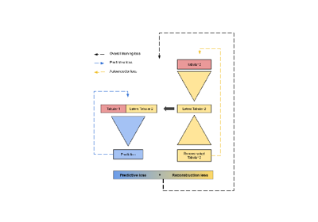

Adding a new model
Below are some guidelines for contributing to this project.
These are examples of .py files that can be used to create your own fusion models. They are not meant to be run as is, but rather to be used as a starting point for your own models.

How to create your own fusion model: a general template
How to create your own fusion model: a general template

Creating a subspace-based fusion model
Creating a subspace-based fusion model